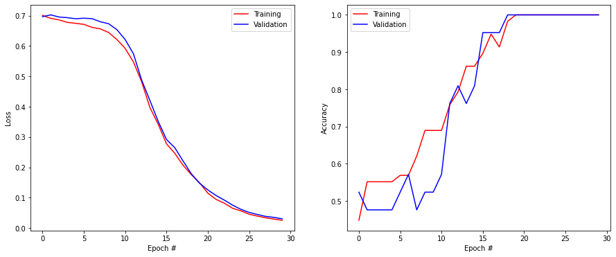
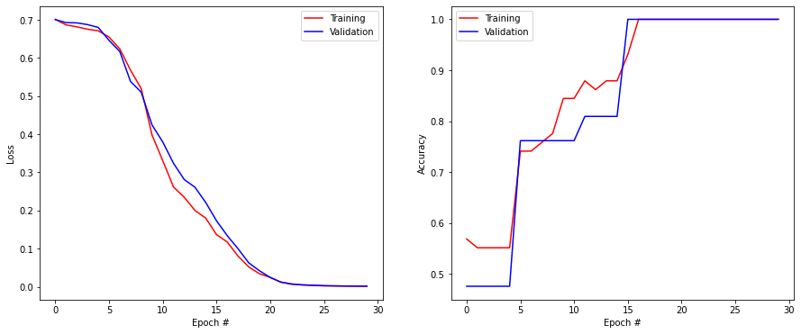
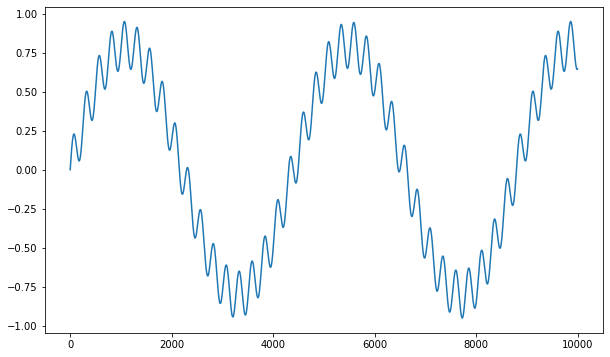
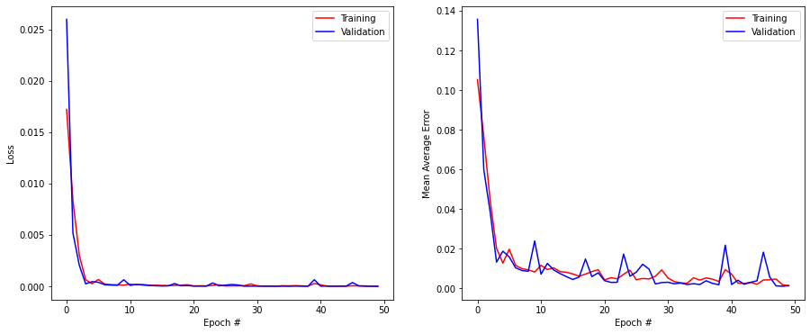
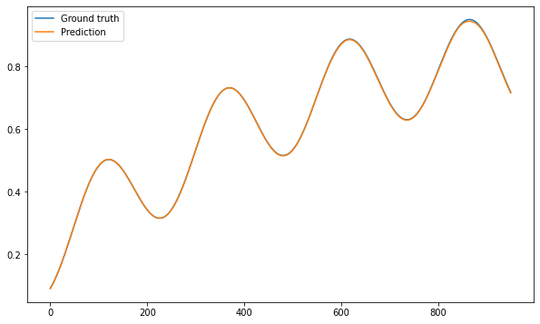
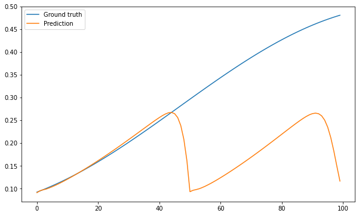

import numpy as np
import matplotlib.pyplot as plt
import tensorflow as tfRecurrent neural networks
The goal is to learn to use LSTM layers in keras for sentiment analysis and time series prediction. The code for sentiment analysis is adapted from https://victorzhou.com/blog/intro-to-rnns/. The code for time series prediction is adapted from https://www.tensorflow.org/tutorials/structured_data/time_series.
Sentiment analysis
The goal to use recurrent neural networks (LSTM) to perform sentiment analysis on short sentences, i.e. to predict whether the sentence has a positive or negative meaning.
The following cells represent your training and test data. They are lists of lists, where the first element is the sentence as a string, and the second a boolean, with True for positive sentences, False for negative ones.
Notice how some sentences are ambiguous (if you do not notice the “not”, the sentiment might be very different).
train_data = [
['good', True],
['bad', False],
['happy', True],
['sad', False],
['not good', False],
['not bad', True],
['not happy', False],
['not sad', True],
['very good', True],
['very bad', False],
['very happy', True],
['very sad', False],
['i am happy', True],
['this is good', True],
['i am bad', False],
['this is bad', False],
['i am sad', False],
['this is sad', False],
['i am not happy', False],
['this is not good', False],
['i am not bad', True],
['this is not sad', True],
['i am very happy', True],
['this is very good', True],
['i am very bad', False],
['this is very sad', False],
['this is very happy', True],
['i am good not bad', True],
['this is good not bad', True],
['i am bad not good', False],
['i am good and happy', True],
['this is not good and not happy', False],
['i am not at all good', False],
['i am not at all bad', True],
['i am not at all happy', False],
['this is not at all sad', True],
['this is not at all happy', False],
['i am good right now', True],
['i am bad right now', False],
['this is bad right now', False],
['i am sad right now', False],
['i was good earlier', True],
['i was happy earlier', True],
['i was bad earlier', False],
['i was sad earlier', False],
['i am very bad right now', False],
['this is very good right now', True],
['this is very sad right now', False],
['this was bad earlier', False],
['this was very good earlier', True],
['this was very bad earlier', False],
['this was very happy earlier', True],
['this was very sad earlier', False],
['i was good and not bad earlier', True],
['i was not good and not happy earlier', False],
['i am not at all bad or sad right now', True],
['i am not at all good or happy right now', False],
['this was not happy and not good earlier', False],
]test_data = [
['this is happy', True],
['i am good', True],
['this is not happy', False],
['i am not good', False],
['this is not bad', True],
['i am not sad', True],
['i am very good', True],
['this is very bad', False],
['i am very sad', False],
['this is bad not good', False],
['this is good and happy', True],
['i am not good and not happy', False],
['i am not at all sad', True],
['this is not at all good', False],
['this is not at all bad', True],
['this is good right now', True],
['this is sad right now', False],
['this is very bad right now', False],
['this was good earlier', True],
['i was not happy and not good earlier', False],
['earlier i was good and not bad', True],
]N_train = len(train_data)
N_test = len(test_data)
print(N_train, "training sentences.")
print(N_test, "test sentences.")58 training sentences.
21 test sentences.Data preparation
The most boring part when training LSTMs on text is to prepare the data correctly. Sentences are sequences of words (possibly a huge number of words), with a variable length (some sentences are shorter than others).
What neural networks expect as input is a fixed-length sequence of numerical vectors \{\mathbf{x}_t\}_{t=0}^T, i.e. they must have a fixed size. So we need to transform each sentence into this format.
The first thing to do is to identify the vocabulary, i.e. the unique words in the training set (fortunately, the test set uses the same exact words) as well as the maximal number of words in each sentence (again, the test set does not have longer sentences).
Q: Create a list vocabulary of unique words in the training set and compute the maximal length nb_words of a sentence.
To extract the words in each sentence, the split() method of Python strings might come handy:
sentence = "I fear this exercise will be difficult"
print(sentence.split(" "))You will also find the set Python object useful to identify unique works. Check the doc. But there are many ways to do that (for loops), just do it the way you prefer.
vocabulary = list(set([w for pair in train_data for w in pair[0].split(' ')]))
print('Unique words found', len(vocabulary)) # 18 unique words found
nb_words = np.max([len(pair[0].split(' ')) for pair in train_data])
print("Maximum sequence length:", nb_words)Unique words found 18
Maximum sequence length: 10Now that we have found our list of 18 unique words, we need to able to perform one-hot encoding of each word, i.e. write a method def one_hot_encoding(word, vocabulary) that takes a word (e.g. “good”) and the vocabulary, and returns a vector of size 18, with mostly zeros, except for a 1.0 at the location of the word in the vocabulary.
For example, if your vocabulary is ["I", "love", "you"], the one-hot encoding of “I” should be np.array([1., 0., 0.]), the one of “love” is np.array([0., 1., 0.]), etc.
Q: Implement the one_hot_encoding() method for single words.
Hint: you might find the method index() of list objects interesting.
def one_hot_encoding(word, vocabulary):
r = np.zeros(len(vocabulary))
r[vocabulary.index(word)] = 1.0
return rQ: You can now create the training set X_train, T_train and the test set X_test, T_test.
The training input data X_train should be a numpy array with 3 dimensions:
X_train = np.zeros((N_train, nb_words, len(vocabulary)))The first index corresponds to each sentence. The second index represents the index of each word in the sentence (maximally nb_words=10). The third index is for the one-hot encoding (18 elements).
Beware: most sentences are shorter than nb_words=10. In that case, the words should be set at the end of the sequence, i.e. you prepend zero vectors.
For example, “I love you” should be encoded as:
"", "", "", "", "", "", "", "I", "love", "you"not as:
"I", "love", "you", "", "", "", "", "", "", ""The reason for that is that the LSTM will get the words one by one and only respond “positive” or “negative” after the last word has been seen. If the words are provided at the beginning of the sequence, vanishing gradients might delete them.
The same holds for the test set, it only has less sentences.
def prepare_data(data, vocabulary, nb_words):
N = len(data)
X = np.zeros((N, nb_words, len(vocabulary)))
T = np.zeros((N, ))
# Iterate over the data
for i in range(N):
x, t = data[i]
# Transform the sentence
words = x.split(" ")
for j in range(len(words)):
word = words[j]
encoding = one_hot_encoding(word, vocabulary)
X[i, -len(words) + j, :] = encoding
# Transform the output
T[i] = int(t)
return X, TX_train, T_train = prepare_data(train_data, vocabulary, nb_words)
X_test, T_test = prepare_data(test_data, vocabulary, nb_words)
print(X_train.shape)
print(T_train.shape)
print(X_test.shape)
print(T_test.shape)(58, 10, 18)
(58,)
(21, 10, 18)
(21,)Training the LSTM
Now we just have to provide the data to a recurrent network. The problem is not very complicated, so we will need a single LSTM layer, followed by a single output neuron (with the logistic transfer function) whose role is to output 1 for the positive class, 0 for the negative one.
Q: Check the documentation for the LSTM layer of keras: https://keras.io/api/layers/recurrent_layers/lstm/. It has many parameters:
tf.keras.layers.LSTM(
units,
activation='tanh',
recurrent_activation='sigmoid',
use_bias=True,
kernel_initializer='glorot_uniform',
recurrent_initializer='orthogonal',
bias_initializer='zeros',
unit_forget_bias=True,
kernel_regularizer=None,
recurrent_regularizer=None, bias_regularizer=None,
activity_regularizer=None, kernel_constraint=None,
recurrent_constraint=None, bias_constraint=None,
dropout=0.0, recurrent_dropout=0.0,
implementation=2,
return_sequences=False, return_state=False,
go_backwards=False, stateful=False, unroll=False)The default value for the parameters is the vanilla LSTM seen in the lectures, but you have the possibility to change the activation functions for the inputs and outputs (not the gates, it must be a sigmoid!), initialize the weights differently, add regularization or dropout, use biases or not, etc. That’s a lot to play with. For this exercise, stick to the default parameters at the beginning. The only thing you need to define is the number of neurons units of the layer.
tf.keras.layers.LSTM(units=N)Note that an important parameter is return_sequences. When set to False (the default), the LSTM layer will process the complete sequence of 10 word vectors, and output a single vector of N values (the number of units). When set to True, the layer would return a sequence of 10 vectors of size N.
Here, we only want the LSTM layer to encode the sentence and feed a single vector to the output layer, so we can leave it to False. If we wanted to stack two LSTM layers on top of each other, we would need to set return_sequences to True for the first layer and False for the second one (you can try that later):
tf.keras.layers.LSTM(N, return_sequences=True)
tf.keras.layers.LSTM(M, return_sequences=False)Q: Create a model with one LSTM layer (with enough units) and one output layer with one neuron ('sigmoid' activation function). Choose an optimizer (SGD, RMSprop, Adam, etc) and a good learning rate. When compiling the model, use the 'binary_crossentropy' loss function as it is a binary classification.
The input layer of the network must take a (nb_words, len(vocabulary)) matrix as input, i.e. (window, nb_features).
tf.keras.layers.Input((nb_words, len(vocabulary)))When training the model with model.fit(), you can pass the test set as validation data, as we do not have too many examples:
model.fit(X_train, T_train, validation_data=(X_test, T_test), ...)Train the model for enough epochs, using a batch size big enough but not too big. In other terms: do the hyperparameter search yourself ;).
def small_model():
tf.keras.backend.clear_session()
model = tf.keras.models.Sequential()
model.add(tf.keras.layers.Input((nb_words, len(vocabulary))))
model.add(tf.keras.layers.LSTM(10))
model.add(tf.keras.layers.Dense(1, activation="sigmoid"))
optimizer = tf.keras.optimizers.Adam(lr=0.01)
model.compile(loss='binary_crossentropy', optimizer=optimizer, metrics=['binary_accuracy'])
print(model.summary())
return modelmodel = small_model()
history = tf.keras.callbacks.History()
model.fit(X_train, T_train, validation_data=(X_test, T_test), epochs=30, batch_size=10, callbacks=[history])
score = model.evaluate(X_test, T_test, verbose=0)
print('Test loss:', score[0])
print('Test accuracy:', score[1])
plt.figure(figsize=(15, 6))
plt.subplot(121)
plt.plot(history.history['loss'], '-r', label="Training")
plt.plot(history.history['val_loss'], '-b', label="Validation")
plt.xlabel('Epoch #')
plt.ylabel('Loss')
plt.legend()
plt.subplot(122)
plt.plot(history.history['binary_accuracy'], '-r', label="Training")
plt.plot(history.history['val_binary_accuracy'], '-b', label="Validation")
plt.xlabel('Epoch #')
plt.ylabel('Accuracy')
plt.legend()
plt.show()Model: "sequential"
_________________________________________________________________
Layer (type) Output Shape Param #
=================================================================
lstm (LSTM) (None, 10) 1160
_________________________________________________________________
dense (Dense) (None, 1) 11
=================================================================
Total params: 1,171
Trainable params: 1,171
Non-trainable params: 0
_________________________________________________________________
None
Epoch 1/30
6/6 [==============================] - 4s 114ms/step - loss: 0.6982 - binary_accuracy: 0.4164 - val_loss: 0.6966 - val_binary_accuracy: 0.5238
Epoch 2/30
6/6 [==============================] - 0s 10ms/step - loss: 0.6710 - binary_accuracy: 0.6405 - val_loss: 0.7026 - val_binary_accuracy: 0.4762
Epoch 3/30
6/6 [==============================] - 0s 9ms/step - loss: 0.6980 - binary_accuracy: 0.5057 - val_loss: 0.6954 - val_binary_accuracy: 0.4762
Epoch 4/30
6/6 [==============================] - 0s 9ms/step - loss: 0.6846 - binary_accuracy: 0.5564 - val_loss: 0.6934 - val_binary_accuracy: 0.4762
Epoch 5/30
6/6 [==============================] - 0s 9ms/step - loss: 0.6814 - binary_accuracy: 0.5319 - val_loss: 0.6898 - val_binary_accuracy: 0.4762
Epoch 6/30
6/6 [==============================] - 0s 9ms/step - loss: 0.6605 - binary_accuracy: 0.6392 - val_loss: 0.6916 - val_binary_accuracy: 0.5238
Epoch 7/30
6/6 [==============================] - 0s 9ms/step - loss: 0.6487 - binary_accuracy: 0.5997 - val_loss: 0.6900 - val_binary_accuracy: 0.5714
Epoch 8/30
6/6 [==============================] - 0s 10ms/step - loss: 0.6536 - binary_accuracy: 0.6133 - val_loss: 0.6799 - val_binary_accuracy: 0.4762
Epoch 9/30
6/6 [==============================] - 0s 9ms/step - loss: 0.6062 - binary_accuracy: 0.7737 - val_loss: 0.6733 - val_binary_accuracy: 0.5238
Epoch 10/30
6/6 [==============================] - 0s 9ms/step - loss: 0.6316 - binary_accuracy: 0.6892 - val_loss: 0.6538 - val_binary_accuracy: 0.5238
Epoch 11/30
6/6 [==============================] - 0s 9ms/step - loss: 0.5812 - binary_accuracy: 0.6942 - val_loss: 0.6212 - val_binary_accuracy: 0.5714
Epoch 12/30
6/6 [==============================] - 0s 8ms/step - loss: 0.5466 - binary_accuracy: 0.7803 - val_loss: 0.5744 - val_binary_accuracy: 0.7619
Epoch 13/30
6/6 [==============================] - 0s 28ms/step - loss: 0.5181 - binary_accuracy: 0.7368 - val_loss: 0.4873 - val_binary_accuracy: 0.8095
Epoch 14/30
6/6 [==============================] - 0s 10ms/step - loss: 0.4618 - binary_accuracy: 0.8465 - val_loss: 0.4202 - val_binary_accuracy: 0.7619
Epoch 15/30
6/6 [==============================] - 0s 9ms/step - loss: 0.3706 - binary_accuracy: 0.8382 - val_loss: 0.3515 - val_binary_accuracy: 0.8095
Epoch 16/30
6/6 [==============================] - 0s 11ms/step - loss: 0.2915 - binary_accuracy: 0.8628 - val_loss: 0.2920 - val_binary_accuracy: 0.9524
Epoch 17/30
6/6 [==============================] - 0s 9ms/step - loss: 0.2362 - binary_accuracy: 0.9731 - val_loss: 0.2651 - val_binary_accuracy: 0.9524
Epoch 18/30
6/6 [==============================] - 0s 9ms/step - loss: 0.1909 - binary_accuracy: 0.9306 - val_loss: 0.2213 - val_binary_accuracy: 0.9524
Epoch 19/30
6/6 [==============================] - 0s 9ms/step - loss: 0.1888 - binary_accuracy: 0.9767 - val_loss: 0.1791 - val_binary_accuracy: 1.0000
Epoch 20/30
6/6 [==============================] - 0s 9ms/step - loss: 0.1485 - binary_accuracy: 1.0000 - val_loss: 0.1478 - val_binary_accuracy: 1.0000
Epoch 21/30
6/6 [==============================] - 0s 9ms/step - loss: 0.1104 - binary_accuracy: 1.0000 - val_loss: 0.1258 - val_binary_accuracy: 1.0000
Epoch 22/30
6/6 [==============================] - 0s 9ms/step - loss: 0.1032 - binary_accuracy: 1.0000 - val_loss: 0.1074 - val_binary_accuracy: 1.0000
Epoch 23/30
6/6 [==============================] - 0s 9ms/step - loss: 0.0974 - binary_accuracy: 1.0000 - val_loss: 0.0922 - val_binary_accuracy: 1.0000
Epoch 24/30
6/6 [==============================] - 0s 9ms/step - loss: 0.0590 - binary_accuracy: 1.0000 - val_loss: 0.0757 - val_binary_accuracy: 1.0000
Epoch 25/30
6/6 [==============================] - 0s 9ms/step - loss: 0.0511 - binary_accuracy: 1.0000 - val_loss: 0.0619 - val_binary_accuracy: 1.0000
Epoch 26/30
6/6 [==============================] - 0s 9ms/step - loss: 0.0432 - binary_accuracy: 1.0000 - val_loss: 0.0517 - val_binary_accuracy: 1.0000
Epoch 27/30
6/6 [==============================] - 0s 10ms/step - loss: 0.0445 - binary_accuracy: 1.0000 - val_loss: 0.0449 - val_binary_accuracy: 1.0000
Epoch 28/30
6/6 [==============================] - 0s 9ms/step - loss: 0.0360 - binary_accuracy: 1.0000 - val_loss: 0.0386 - val_binary_accuracy: 1.0000
Epoch 29/30
6/6 [==============================] - 0s 9ms/step - loss: 0.0370 - binary_accuracy: 1.0000 - val_loss: 0.0353 - val_binary_accuracy: 1.0000
Epoch 30/30
6/6 [==============================] - 0s 9ms/step - loss: 0.0296 - binary_accuracy: 1.0000 - val_loss: 0.0307 - val_binary_accuracy: 1.0000
Test loss: 0.030699074268341064
Test accuracy: 1.0
A: It works easily.
Q. Once you have been able to successfully train the network, vary the different parts of the model to understand their influence: learning rate, number of units, optimizer, etc. Add another LSTM layer to see what happens. Exchange the LSTM layer with the GRU layer.
def big_model():
tf.keras.backend.clear_session()
model = tf.keras.models.Sequential()
model.add(tf.keras.layers.Input((nb_words, len(vocabulary))))
model.add(tf.keras.layers.LSTM(20, return_sequences=True))
model.add(tf.keras.layers.LSTM(10, return_sequences=False))
model.add(tf.keras.layers.Dense(1, activation="sigmoid"))
optimizer = tf.keras.optimizers.Adam(lr=0.01)
model.compile(loss='binary_crossentropy', optimizer=optimizer, metrics=['binary_accuracy'])
print(model.summary())
return modelmodel = big_model()
history = tf.keras.callbacks.History()
model.fit(X_train, T_train, validation_data=(X_test, T_test), epochs=30, batch_size=10, callbacks=[history])
score = model.evaluate(X_test, T_test, verbose=0)
print('Test loss:', score[0])
print('Test accuracy:', score[1])
plt.figure(figsize=(15, 6))
plt.subplot(121)
plt.plot(history.history['loss'], '-r', label="Training")
plt.plot(history.history['val_loss'], '-b', label="Validation")
plt.xlabel('Epoch #')
plt.ylabel('Loss')
plt.legend()
plt.subplot(122)
plt.plot(history.history['binary_accuracy'], '-r', label="Training")
plt.plot(history.history['val_binary_accuracy'], '-b', label="Validation")
plt.xlabel('Epoch #')
plt.ylabel('Accuracy')
plt.legend()
plt.show()Model: "sequential"
_________________________________________________________________
Layer (type) Output Shape Param #
=================================================================
lstm (LSTM) (None, 10, 20) 3120
_________________________________________________________________
lstm_1 (LSTM) (None, 10) 1240
_________________________________________________________________
dense (Dense) (None, 1) 11
=================================================================
Total params: 4,371
Trainable params: 4,371
Non-trainable params: 0
_________________________________________________________________
None
Epoch 1/30
6/6 [==============================] - 3s 126ms/step - loss: 0.6949 - binary_accuracy: 0.6490 - val_loss: 0.7004 - val_binary_accuracy: 0.4762
Epoch 2/30
6/6 [==============================] - 0s 11ms/step - loss: 0.6915 - binary_accuracy: 0.5153 - val_loss: 0.6925 - val_binary_accuracy: 0.4762
Epoch 3/30
6/6 [==============================] - 0s 11ms/step - loss: 0.6813 - binary_accuracy: 0.5579 - val_loss: 0.6919 - val_binary_accuracy: 0.4762
Epoch 4/30
6/6 [==============================] - 0s 11ms/step - loss: 0.6781 - binary_accuracy: 0.5419 - val_loss: 0.6874 - val_binary_accuracy: 0.4762
Epoch 5/30
6/6 [==============================] - 0s 11ms/step - loss: 0.6644 - binary_accuracy: 0.5853 - val_loss: 0.6798 - val_binary_accuracy: 0.4762
Epoch 6/30
6/6 [==============================] - 0s 11ms/step - loss: 0.6725 - binary_accuracy: 0.6397 - val_loss: 0.6461 - val_binary_accuracy: 0.7619
Epoch 7/30
6/6 [==============================] - 0s 11ms/step - loss: 0.6507 - binary_accuracy: 0.7549 - val_loss: 0.6170 - val_binary_accuracy: 0.7619
Epoch 8/30
6/6 [==============================] - 0s 12ms/step - loss: 0.6102 - binary_accuracy: 0.7229 - val_loss: 0.5384 - val_binary_accuracy: 0.7619
Epoch 9/30
6/6 [==============================] - 0s 12ms/step - loss: 0.5777 - binary_accuracy: 0.7188 - val_loss: 0.5100 - val_binary_accuracy: 0.7619
Epoch 10/30
6/6 [==============================] - 0s 13ms/step - loss: 0.4356 - binary_accuracy: 0.8078 - val_loss: 0.4245 - val_binary_accuracy: 0.7619
Epoch 11/30
6/6 [==============================] - 0s 11ms/step - loss: 0.3224 - binary_accuracy: 0.8566 - val_loss: 0.3798 - val_binary_accuracy: 0.7619
Epoch 12/30
6/6 [==============================] - 0s 11ms/step - loss: 0.2309 - binary_accuracy: 0.9162 - val_loss: 0.3239 - val_binary_accuracy: 0.8095
Epoch 13/30
6/6 [==============================] - 0s 11ms/step - loss: 0.1888 - binary_accuracy: 0.8865 - val_loss: 0.2813 - val_binary_accuracy: 0.8095
Epoch 14/30
6/6 [==============================] - 0s 12ms/step - loss: 0.2265 - binary_accuracy: 0.8508 - val_loss: 0.2611 - val_binary_accuracy: 0.8095
Epoch 15/30
6/6 [==============================] - 0s 11ms/step - loss: 0.1821 - binary_accuracy: 0.8974 - val_loss: 0.2211 - val_binary_accuracy: 0.8095
Epoch 16/30
6/6 [==============================] - 0s 11ms/step - loss: 0.1445 - binary_accuracy: 0.9070 - val_loss: 0.1734 - val_binary_accuracy: 1.0000
Epoch 17/30
6/6 [==============================] - 0s 11ms/step - loss: 0.1258 - binary_accuracy: 1.0000 - val_loss: 0.1343 - val_binary_accuracy: 1.0000
Epoch 18/30
6/6 [==============================] - 0s 11ms/step - loss: 0.0961 - binary_accuracy: 1.0000 - val_loss: 0.1001 - val_binary_accuracy: 1.0000
Epoch 19/30
6/6 [==============================] - 0s 11ms/step - loss: 0.0575 - binary_accuracy: 1.0000 - val_loss: 0.0631 - val_binary_accuracy: 1.0000
Epoch 20/30
6/6 [==============================] - 0s 11ms/step - loss: 0.0367 - binary_accuracy: 1.0000 - val_loss: 0.0423 - val_binary_accuracy: 1.0000
Epoch 21/30
6/6 [==============================] - 0s 11ms/step - loss: 0.0290 - binary_accuracy: 1.0000 - val_loss: 0.0247 - val_binary_accuracy: 1.0000
Epoch 22/30
6/6 [==============================] - 0s 11ms/step - loss: 0.0100 - binary_accuracy: 1.0000 - val_loss: 0.0123 - val_binary_accuracy: 1.0000
Epoch 23/30
6/6 [==============================] - 0s 12ms/step - loss: 0.0091 - binary_accuracy: 1.0000 - val_loss: 0.0070 - val_binary_accuracy: 1.0000
Epoch 24/30
6/6 [==============================] - 0s 11ms/step - loss: 0.0045 - binary_accuracy: 1.0000 - val_loss: 0.0053 - val_binary_accuracy: 1.0000
Epoch 25/30
6/6 [==============================] - 0s 10ms/step - loss: 0.0042 - binary_accuracy: 1.0000 - val_loss: 0.0043 - val_binary_accuracy: 1.0000
Epoch 26/30
6/6 [==============================] - 0s 11ms/step - loss: 0.0023 - binary_accuracy: 1.0000 - val_loss: 0.0031 - val_binary_accuracy: 1.0000
Epoch 27/30
6/6 [==============================] - 0s 10ms/step - loss: 0.0026 - binary_accuracy: 1.0000 - val_loss: 0.0026 - val_binary_accuracy: 1.0000
Epoch 28/30
6/6 [==============================] - 0s 11ms/step - loss: 0.0021 - binary_accuracy: 1.0000 - val_loss: 0.0022 - val_binary_accuracy: 1.0000
Epoch 29/30
6/6 [==============================] - 0s 11ms/step - loss: 0.0018 - binary_accuracy: 1.0000 - val_loss: 0.0021 - val_binary_accuracy: 1.0000
Epoch 30/30
6/6 [==============================] - 0s 11ms/step - loss: 0.0013 - binary_accuracy: 1.0000 - val_loss: 0.0019 - val_binary_accuracy: 1.0000
Test loss: 0.0019315623212605715
Test accuracy: 1.0
Time series prediction
Another useful function of RNNs is forecasting, i.e. predicting the rest of a sequence (financial markets, weather, etc.) based on its history.
Let’s generate a dummy one-dimensional signal with 10000 points:
N = 10000
time_axis = np.arange(N)
signal = 0.8*np.sin(time_axis/700) + 0.15*np.sin(time_axis/40)
plt.figure(figsize=(10, 6))
plt.plot(signal)
plt.show()
We are going to use a small window (50 points) to feed the LSTM. The goal will be to perform one-step ahead prediction: given the last 50 points, what will be the next one?
The following cell prepares the data for the problem. Check that the data is what you expect.
window = 50
X = np.array(
[signal[t: t+ window] for t in time_axis[:-window]]
)
t = signal[time_axis[1:-window+1]]
print(X.shape)
print(t.shape)(9950, 50)
(9950,)We now split the signal into training and test sets. The training set consists of the 9000 first points, while the test set consists of the remaining 1000 points (the future). Note that the test set is not exactly contained in the training set as the function is not periodic, but quite.
nb_train = 9000
X_train = X[:nb_train]
T_train = t[:nb_train]
X_test = X[nb_train:]
T_test = t[nb_train:]Q: Create a neural network taking a (window, 1) input, with one LSTM layer and one output neuron using the tanh activation function (as the targets are between -1 and 1). Train it on the data as a regression problem (use many epochs). Track the mean average error (metrics=['mae']) in addition to the mse, as it indicates better the prediction error. After training, plot the prediction for the test set and compare it to the ground truth.
def create_model(window):
tf.keras.backend.clear_session()
inputs = tf.keras.layers.Input((window, 1))
x = tf.keras.layers.LSTM(20)(inputs)
output = tf.keras.layers.Dense(1, activation="tanh")(x)
model = tf.keras.models.Model(inputs, output)
optimizer = tf.keras.optimizers.Adam(lr=0.01)
model.compile(loss='mse', optimizer=optimizer, metrics=['mae'])
print(model.summary())
return modelmodel = create_model(window)
history = tf.keras.callbacks.History()
model.fit(X_train, T_train, validation_data=(X_test, T_test), epochs=50, batch_size=64, callbacks=[history])
score = model.evaluate(X_test, T_test, verbose=0)
print('Test loss:', score[0])
print('Test accuracy:', score[1])
plt.figure(figsize=(15, 6))
plt.subplot(121)
plt.plot(history.history['loss'], '-r', label="Training")
plt.plot(history.history['val_loss'], '-b', label="Validation")
plt.xlabel('Epoch #')
plt.ylabel('Loss')
plt.legend()
plt.subplot(122)
plt.plot(history.history['mae'], '-r', label="Training")
plt.plot(history.history['val_mae'], '-b', label="Validation")
plt.xlabel('Epoch #')
plt.ylabel('Mean Average Error')
plt.legend()
plt.show()Model: "model"
_________________________________________________________________
Layer (type) Output Shape Param #
=================================================================
input_1 (InputLayer) [(None, 50, 1)] 0
_________________________________________________________________
lstm (LSTM) (None, 20) 1760
_________________________________________________________________
dense (Dense) (None, 1) 21
=================================================================
Total params: 1,781
Trainable params: 1,781
Non-trainable params: 0
_________________________________________________________________
None
Epoch 1/50
141/141 [==============================] - 2s 7ms/step - loss: 0.0321 - mae: 0.1348 - val_loss: 0.0260 - val_mae: 0.1357
Epoch 2/50
141/141 [==============================] - 1s 5ms/step - loss: 0.0095 - mae: 0.0818 - val_loss: 0.0052 - val_mae: 0.0596
Epoch 3/50
141/141 [==============================] - 1s 5ms/step - loss: 0.0039 - mae: 0.0510 - val_loss: 0.0020 - val_mae: 0.0384
Epoch 4/50
141/141 [==============================] - 1s 5ms/step - loss: 8.8932e-04 - mae: 0.0237 - val_loss: 2.3679e-04 - val_mae: 0.0132
Epoch 5/50
141/141 [==============================] - 1s 5ms/step - loss: 2.3213e-04 - mae: 0.0122 - val_loss: 4.4895e-04 - val_mae: 0.0187
Epoch 6/50
141/141 [==============================] - 1s 5ms/step - loss: 4.5989e-04 - mae: 0.0159 - val_loss: 3.8623e-04 - val_mae: 0.0158
Epoch 7/50
141/141 [==============================] - 1s 5ms/step - loss: 2.5193e-04 - mae: 0.0126 - val_loss: 1.4829e-04 - val_mae: 0.0103
Epoch 8/50
141/141 [==============================] - 1s 5ms/step - loss: 1.9236e-04 - mae: 0.0107 - val_loss: 1.1680e-04 - val_mae: 0.0089
Epoch 9/50
141/141 [==============================] - 1s 5ms/step - loss: 1.5906e-04 - mae: 0.0099 - val_loss: 1.0358e-04 - val_mae: 0.0085
Epoch 10/50
141/141 [==============================] - 1s 5ms/step - loss: 8.3204e-05 - mae: 0.0072 - val_loss: 6.3628e-04 - val_mae: 0.0238
Epoch 11/50
141/141 [==============================] - 1s 5ms/step - loss: 2.3202e-04 - mae: 0.0123 - val_loss: 8.6499e-05 - val_mae: 0.0071
Epoch 12/50
141/141 [==============================] - 1s 5ms/step - loss: 1.5292e-04 - mae: 0.0098 - val_loss: 1.8333e-04 - val_mae: 0.0125
Epoch 13/50
141/141 [==============================] - 1s 5ms/step - loss: 1.3011e-04 - mae: 0.0090 - val_loss: 1.2432e-04 - val_mae: 0.0092
Epoch 14/50
141/141 [==============================] - 1s 5ms/step - loss: 1.2748e-04 - mae: 0.0090 - val_loss: 7.3832e-05 - val_mae: 0.0074
Epoch 15/50
141/141 [==============================] - 1s 5ms/step - loss: 8.2734e-05 - mae: 0.0072 - val_loss: 5.1241e-05 - val_mae: 0.0058
Epoch 16/50
141/141 [==============================] - 1s 5ms/step - loss: 1.0381e-04 - mae: 0.0081 - val_loss: 2.6565e-05 - val_mae: 0.0044
Epoch 17/50
141/141 [==============================] - 1s 5ms/step - loss: 6.0350e-05 - mae: 0.0061 - val_loss: 4.3032e-05 - val_mae: 0.0056
Epoch 18/50
141/141 [==============================] - 1s 5ms/step - loss: 7.3179e-05 - mae: 0.0070 - val_loss: 2.6526e-04 - val_mae: 0.0147
Epoch 19/50
141/141 [==============================] - 1s 5ms/step - loss: 1.5532e-04 - mae: 0.0098 - val_loss: 4.6380e-05 - val_mae: 0.0058
Epoch 20/50
141/141 [==============================] - 1s 5ms/step - loss: 1.8684e-04 - mae: 0.0104 - val_loss: 7.1898e-05 - val_mae: 0.0077
Epoch 21/50
141/141 [==============================] - 1s 5ms/step - loss: 2.7324e-05 - mae: 0.0042 - val_loss: 2.1653e-05 - val_mae: 0.0038
Epoch 22/50
141/141 [==============================] - 1s 5ms/step - loss: 3.3472e-05 - mae: 0.0046 - val_loss: 1.3280e-05 - val_mae: 0.0029
Epoch 23/50
141/141 [==============================] - 1s 5ms/step - loss: 5.0352e-05 - mae: 0.0055 - val_loss: 1.3503e-05 - val_mae: 0.0030
Epoch 24/50
141/141 [==============================] - 1s 5ms/step - loss: 5.2304e-05 - mae: 0.0054 - val_loss: 3.2720e-04 - val_mae: 0.0172
Epoch 25/50
141/141 [==============================] - 1s 5ms/step - loss: 1.6084e-04 - mae: 0.0098 - val_loss: 4.7370e-05 - val_mae: 0.0061
Epoch 26/50
141/141 [==============================] - 1s 5ms/step - loss: 3.0319e-05 - mae: 0.0044 - val_loss: 1.1324e-04 - val_mae: 0.0081
Epoch 27/50
141/141 [==============================] - 1s 6ms/step - loss: 4.3116e-05 - mae: 0.0051 - val_loss: 1.7483e-04 - val_mae: 0.0121
Epoch 28/50
141/141 [==============================] - 1s 5ms/step - loss: 6.8618e-05 - mae: 0.0061 - val_loss: 1.2294e-04 - val_mae: 0.0096
Epoch 29/50
141/141 [==============================] - 1s 5ms/step - loss: 4.5403e-05 - mae: 0.0052 - val_loss: 6.6824e-06 - val_mae: 0.0021
Epoch 30/50
141/141 [==============================] - 1s 5ms/step - loss: 5.2677e-04 - mae: 0.0155 - val_loss: 1.3084e-05 - val_mae: 0.0028
Epoch 31/50
141/141 [==============================] - 1s 5ms/step - loss: 4.1677e-05 - mae: 0.0050 - val_loss: 1.2648e-05 - val_mae: 0.0030
Epoch 32/50
141/141 [==============================] - 1s 5ms/step - loss: 2.1466e-05 - mae: 0.0037 - val_loss: 7.2209e-06 - val_mae: 0.0022
Epoch 33/50
141/141 [==============================] - 1s 5ms/step - loss: 8.8189e-06 - mae: 0.0024 - val_loss: 9.4702e-06 - val_mae: 0.0026
Epoch 34/50
141/141 [==============================] - 1s 5ms/step - loss: 1.6518e-05 - mae: 0.0031 - val_loss: 4.7648e-06 - val_mae: 0.0018
Epoch 35/50
141/141 [==============================] - 1s 5ms/step - loss: 6.3752e-05 - mae: 0.0055 - val_loss: 8.0761e-06 - val_mae: 0.0023
Epoch 36/50
141/141 [==============================] - 1s 5ms/step - loss: 1.2616e-05 - mae: 0.0025 - val_loss: 4.8663e-06 - val_mae: 0.0019
Epoch 37/50
141/141 [==============================] - 1s 5ms/step - loss: 1.1288e-04 - mae: 0.0075 - val_loss: 1.8049e-05 - val_mae: 0.0038
Epoch 38/50
141/141 [==============================] - 1s 5ms/step - loss: 4.6925e-05 - mae: 0.0053 - val_loss: 7.7753e-06 - val_mae: 0.0024
Epoch 39/50
141/141 [==============================] - 1s 5ms/step - loss: 1.5035e-05 - mae: 0.0031 - val_loss: 4.5659e-06 - val_mae: 0.0018
Epoch 40/50
141/141 [==============================] - 1s 5ms/step - loss: 5.1643e-05 - mae: 0.0039 - val_loss: 6.4413e-04 - val_mae: 0.0217
Epoch 41/50
141/141 [==============================] - 1s 5ms/step - loss: 3.4189e-04 - mae: 0.0120 - val_loss: 5.2492e-06 - val_mae: 0.0019
Epoch 42/50
141/141 [==============================] - 1s 5ms/step - loss: 9.2156e-06 - mae: 0.0024 - val_loss: 2.2826e-05 - val_mae: 0.0040
Epoch 43/50
141/141 [==============================] - 1s 5ms/step - loss: 9.4703e-06 - mae: 0.0024 - val_loss: 5.3999e-06 - val_mae: 0.0020
Epoch 44/50
141/141 [==============================] - 1s 5ms/step - loss: 1.5472e-05 - mae: 0.0031 - val_loss: 1.2471e-05 - val_mae: 0.0030
Epoch 45/50
141/141 [==============================] - 1s 5ms/step - loss: 9.6372e-06 - mae: 0.0024 - val_loss: 1.6067e-05 - val_mae: 0.0037
Epoch 46/50
141/141 [==============================] - 1s 5ms/step - loss: 1.1083e-05 - mae: 0.0022 - val_loss: 3.5924e-04 - val_mae: 0.0182
Epoch 47/50
141/141 [==============================] - 1s 5ms/step - loss: 8.1012e-05 - mae: 0.0068 - val_loss: 4.1036e-05 - val_mae: 0.0057
Epoch 48/50
141/141 [==============================] - 1s 5ms/step - loss: 4.1891e-05 - mae: 0.0048 - val_loss: 2.2498e-06 - val_mae: 0.0012
Epoch 49/50
141/141 [==============================] - 1s 5ms/step - loss: 4.7253e-06 - mae: 0.0017 - val_loss: 1.5864e-06 - val_mae: 9.7631e-04
Epoch 50/50
141/141 [==============================] - 1s 5ms/step - loss: 2.3313e-06 - mae: 0.0012 - val_loss: 2.7683e-06 - val_mae: 0.0012
Test loss: 2.7682647214533063e-06
Test accuracy: 0.0012316412758082151
y = model.predict(X_test)
plt.figure(figsize=(10, 6))
plt.plot(T_test, label="Ground truth")
plt.plot(y[:, 0], label="Prediction")
plt.legend()
plt.show()
It seems possible to get a high precision on the test set, but there is a trick. The sequence fed as an input when testing consists of real measurements. The network has only learned to predict the next data point. Can we use that model to predict the next 1000 points without seeing the true data?
For that, we need to build an auto-regressive model, i.e. to feed inputs to the network consisting of predictions, not of real data points. We need a structure that can represent a fixed-size window of data points, where we can append predictions one by one. The following cell provides you with a simple implementation:
from collections import deque
class Buffer:
"Fixed size buffer allowing to append predictions."
def __init__(self, window, data):
self.window = window
self.data = data.reshape((1, window))
def append(self, value):
d = deque([x for x in list(self.data[0, :])])
d.popleft()
d.append(value)
self.data = np.array(d).reshape((1, self.window))You can create the buffer by intializing it with the first test sample consisting of 50 real data points:
buffer = Buffer(window, X_test[0, :])buffer.data can be passed directly to the model in order to make a prediction:
y = model.predict(buffer.data)[0, 0]This prediction can be appended to the buffer, which can be used as the next input to the model:
buffer.append(y)Q: Make recursive prediction using your trained model. Does it work?
predictions = []
buffer = Buffer(window, X_test[0, :])
for t in range(100):
# Make a prediction using the current buffer
y = model.predict(buffer.data)[0, 0]
# Store the prediction
predictions.append(y)
# Append the prediction to buffer
buffer.append(y)
plt.figure(figsize=(10, 6))
plt.plot(T_test[:100], label="Ground truth")
plt.plot(predictions, label="Prediction")
plt.legend()
plt.show()
A: No. The slightest imprecision in the prediction accumulates in the input. After a while, the input to the model does not correspond to something that has been learned, and the output stops making sense. RNN do not have their own dynamics and are quite bad at predicting time series unless you have a lot of training data. With little data, reservoir computing is a much better solution.